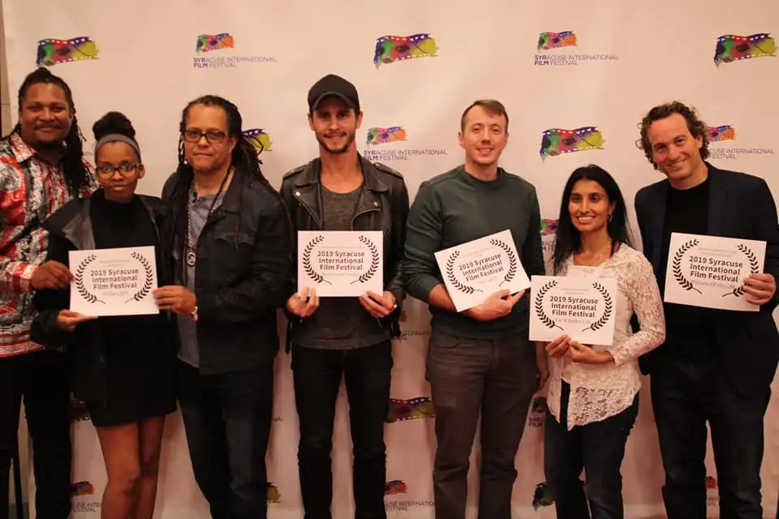

Welcome to the 2025 Film Festival
Discover inspiring stories, meet visionary filmmakers from around the world, and immerse yourself in powerful cinema that sparks conversation and connection.Join us in celebrating the art of film—right here in Syracuse.
Explore NowThe Syracuse International Film Festival was created in 2003
As a space where stories by, for, and about film and media can thrive, the Syracuse International Film Festival serves as a year-round platform for creative exchange and cultural connection. Through a wide range of screenings, talks, and special programs, members of the Festival community actively produce, present, and promote content that is designed not just to entertain, but to inspire, challenge, and bring people together.
Click Here.
Get Involved
Join our journey through stories, creativity, and global cinema.